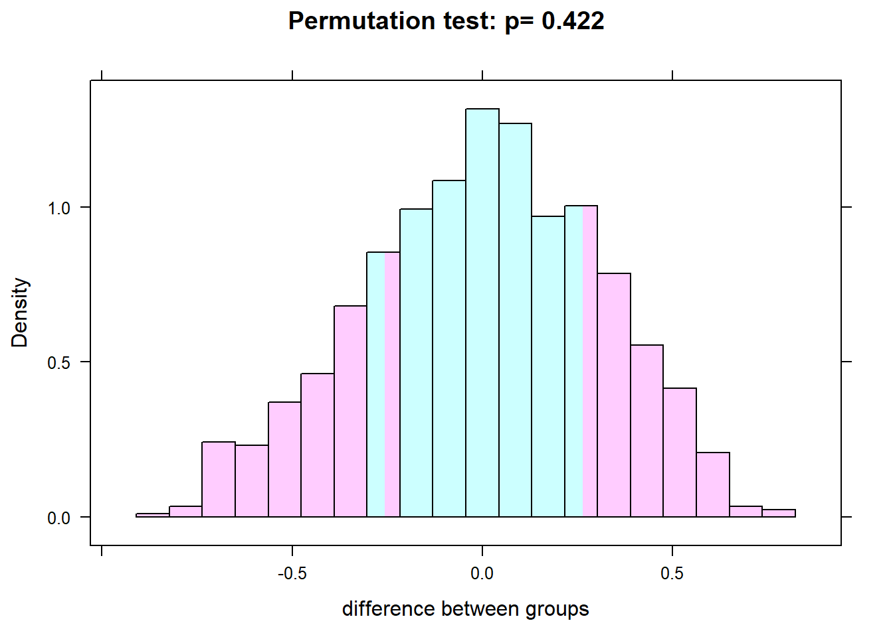

Chapter 2 Randomization
Here is a review of existing methods.
2.1 Understanding the basics
Let us write a very simple data-generating process (DGP) for a trivial RCT.
library(mvtnorm)
set.seed(2001)
beta <- 0.5
sigma <- matrix(c(1.0,0.0,
0.0,1.0),ncol=2)
## Generate residuals and variables
N <- 20
m <- rmvnorm(N,mean=c(0,0),sigma=sigma)
## Write down the DGP:
Dstar <- m[,1]
D <- ifelse(Dstar>0,1,0)
Y <- beta*D + m[,2]
data <- data.frame(cbind(D,Y))
head(data)## D Y
## 1 1 -0.2778131
## 2 0 0.3027668
## 3 1 1.3985959
## 4 1 1.1322528
## 5 1 -0.6073642
## 6 0 0.8978806The standard way of doing the impact evaluation is then simply a comparison of means, which boils down to an OLS regression.
summary(lm(Y ~ D))##
## Call:
## lm(formula = Y ~ D)
##
## Residuals:
## Min 1Q Median 3Q Max
## -1.0354 -0.3314 -0.1213 0.2210 1.7923
##
## Coefficients:
## Estimate Std. Error t value Pr(>|t|)
## (Intercept) 0.1647 0.2606 0.632 0.535
## D 0.2634 0.3233 0.815 0.426
##
## Residual standard error: 0.6896 on 18 degrees of freedom
## Multiple R-squared: 0.03556, Adjusted R-squared: -0.01802
## F-statistic: 0.6636 on 1 and 18 DF, p-value: 0.4259Heckman (1996)
2.2 The randomista debate
Deaton (2010) Imbens (2010) Barrett and Carter (2010) Ravallion (2012) Deaton and Cartwright (2016) Ravallion (2018)
2.3 Bias and randomization inference
Young (2016)
The basic idea behind randomization inference is to do all of the permutations of treatment status D. We can do this with the mosaic package.
# How many unique permutations are there of treatment?
2^20## [1] 1048576library(mosaic)
obsdiff = with(data, mean(Y[D==1]) - mean(Y[D==0]))
obsdiff## [1] 0.2633623numsim = 1000
res = do(numsim) * lm(Y ~ shuffle(D), data=data)
pvalue = sum(abs(res$D) > abs(obsdiff)) / numsim
histogram(~ res$D, group = abs(res$D) > abs(obsdiff),
n=20, density=FALSE, data=res, xlab="difference between groups",
main=paste("Permutation test: p=", pvalue))
Now do it properly using the coin package
library(coin)## Loading required package: survivaloneway_test(Y ~ as.factor(D), alternative = "two.sided", data=data, distribution = "exact")##
## Exact Two-Sample Fisher-Pitman Permutation Test
##
## data: Y by as.factor(D) (0, 1)
## Z = -0.82194, p-value = 0.4364
## alternative hypothesis: true mu is not equal to 0You should also read Eble, Boone, and Elbourne (2017) and Athey and Imbens (2016)
References
Heckman, James J. 1996. “Randomization as an Instrumental Variable.” Review of Economics and Statistics 78 (2): 336–41.
Deaton, Angus. 2010. “Instruments, Randomization, and Learning About Development.” Journal of Economic Literature 48 (2): 424–55.
Imbens, Guido W. 2010. “Better LATE Than Nothing: Some Comments on Deaton (2009) and Heckman and Urzua (2009).” Journal of Economic Literature 48 (2): 399–423.
Barrett, Christopher B., and Michael R. Carter. 2010. “The Power and Pitfalls of Experiments in Development Economics: Some Non-Random Reflections.” Applied Economic Perspectives and Policy 32 (4): 515–48.
Ravallion, Martin. 2012. “Fighting Poverty One Experiment at a Time: A Review of Abhijit Banerjee and Esther Duflo’s Poor Economics: A Radical Rethinking of the Way to Fight Global Poverty.” Journal of Economic Literature 50 (1): 103–14.
Deaton, Angus, and Nancy Cartwright. 2016. “Understanding and Misunderstanding Randomized Controlled Trials.”
Ravallion, Martin. 2018. “Should the Randomistas (Continue to) Rule?”
Young, Alwyn. 2016. “Channelling Fisher: Randomization Tests and the Statistical Insignificance of Seemingly Significant Experimental Results.”
Eble, Alex, Peter Boone, and Diana Elbourne. 2017. “On Minimizing the Risk of Bias in Randomized Controlled Trials in Economics.” World Bank Economic Review 31 (3): 687–707.
Athey, Susan, and Guido W. Imbens. 2016. “The Econometrics of Randomized Experiments.”
Malani, Anup. 2006. “Identifying Placebo Effects with Data from Clinical Trials.” Journal of Political Economy 114 (2): 236–56.
Bulte, Erwin, Gonne Beekman, Salvatore Di Falco, Joseph Hella, and Pan Lei. 2014. “Behavioral Responses and the Impact of New Agricultural Technologies: Evidence from a Double-Blind Field Experiment in Tanzania.” American Journal of Agricultural Economics 96 (3): 813–30.
Chassang, Sylvain, Gerard Padró I Miquel, and Erik Snowberg. 2012. “Selective Trials: A Principal-Agent Approach to Randomized Controlled Experiments.” American Economic Review 102 (4): 1279–1309.
Wing, Coady, and M. H. Clark. 2016. “What Can We Learn from a Doubly Randomized Preference Trial? –An Instrumental Variables Perspective.” Journal of Policy Analysis and Management 36 (2): 418–37.